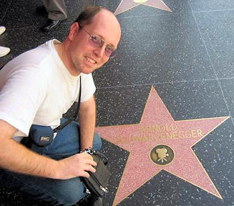
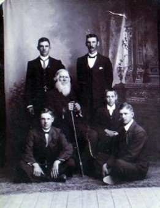
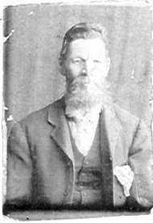
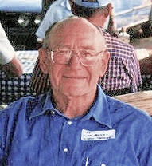
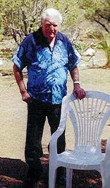
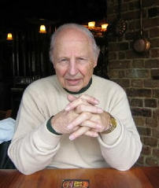
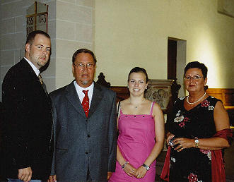

b7.c8.d8.e3.f4.g1. Stephanus Rudolf Henning, S/v Fanie en Hettie Henning van Kuilsrivier is deur Microsoft Suid-Afrika genooi om die week van 12 tot 16 September 2005 die ‘Professional Developers Conference’ wat slegs een keer elke paar jaar gehou word, in Los Angeles by te woon. Weens sy betrokken-heid by die plaaslike sagte-ware ontwikkelaars gemeen-skap is hy gekies om Suid Afrika te verteenwoordig.
Microsoft het alle kostes gedra vanaf die vlugte tot die verblyf in die hotel in Hollywood en ook die konferensie. Rudolf het vanaf Johannesburg na Amsterdam gevlieg om daar by die Europese verteenwoordigers aan te sluit vir ‘n gesamentlike vlug na Los Angeles.
In Amerika het almal in hotelle tuis gegaan. Rudolf het in die Renaissance Hollywood hotel gebly wat direk uitkyk op die wêreldbekende Hollywood naambord teen die berg.
Die konferensie was ‘n hele week lank en die nuutste programmerings-tegnieke is aan die konferensiegangers oorgedra. Rudolf is dus die eerste persoon in Suid-Afrika (buiten werknemers van Microsoft) wat hierdie kennis opgedoen het. Rudolf sê (tong in die kies) dat hy darem vir Bill Gates gesien het, maar daar was deurentyd te veel mense by vriend Bill, sodat hy nie kans gehad het om vir Rudolf te kom groet nie. Gelukkig was daar ook vrye tyd om bietjie meer van Hollywood en selfs Universal Studios te sien. Een aand is die hele groep wat die konferensie bygewoon het met busse na Universal Studios se pretpark toe geneem. Die pretpark laat ‘Gold Reef City’ na ‘n kinderspeelplek lyk.
In Hollywood het Rudolf tyd gehad om die ‘Hollywood boule-vard’ op en af te stap. Dit is die straat waar al die rolprentsterre se ‘sterre’ op die sypaadjies geplaas is.
Rudolf is natuurlik die persoon wat vir Bondsekretaris, Olivier Henning bystaan met die samestelling van die Henning Familiekroniek op Laserskyf (CD). Dit is hy wat die programmering en uitleg so puik gedoen het.


Rina Venter van Garsfontein, Pretoria het onlangs die foto langsaan by Petro Steenkamp, die weduwee van wyle Ds Willem Steenkamp van die GKSA, ontvang. Dit is ‘n foto van b6.c3.d2. Willem Frederik Henning *4-7-1830 en sy vyf kleinseuns wat na hom vernoem is.
Ongelukkig kon ons slegs twee van die kleinseuns positief identifiseer, naamlik Willem Frederik Steenkamp *C 1890, S/v b6.c3.d2.e2. Anna Maria Henning en haar man Louis Stephanus Steenkamp (regs voor), die vader van Ds Willem Steenkamp. Net links van hom verskyn b6.c3.d2.e8.f1. Willem Frederik Henning *8-3-1911, S/v Willem Frederik Henning en Hendrina Johanna Henning (b6.c1.d3.e4.f3.)
Ons weet dat b6.c3.d2.e6.f1. Willem Frederik Henning *23-10-1893, S/v Hermanus Marthinus Henning en Anna Johanna Vorster ook op die foto is, maar ons kan hom ongelukkig nie positief identifiseer nie.
Petro het ook gemeld dat daar 'n riempiesbank in hulle familie is wat deur die oue Willem Frederik Henning gemaak is. Die riempiesbank staan by haar seun in België. Sy is bereid om vir ons 'n foto van die bank te laat kry.


As mens deur Hoofstuk 6 van die Henning Familiekroniek blaai, sal mens sien dat b5.c4. Jacobus Cornelis Stephanus Henning *16-8-1811 en sy vrou Hester Margaretha van der Linde bykans hulle hele lewe lank op die plase Geelbeksfontein en Jakkalsfontein in die Colesberg (latere Noupoort-) distrik gewoon het. Hulle het nege kinders gehad, waarvan almal, met uitsondering van hul sewende kind, Pieter Hendrik, in die kerk te Colesberg gedoop is. Ons kon ongelukkig nie vasstel waar Pieter Hendrik gedoop is nie. Die implikasie hiervan is dat ons nie die korrekte geboortedatum van Pieter Hendrik kon vasstel nie.
b5.c4.d7.e1.f3.g1.h1. Stephen Henning van Northmead, Benoni, het onlangs vir ons laat weet dat met die afsterwe van sy vader, James Cornelius, diè vir hom ‘n sakhorlosie nagelaat het. James Cornelius het die horlosie weer van sy oupa, Jacobus Cornelis Stephanus Henning *19-7-1872 geêrf.
Aan die binnekant van die rugplaat van die horlosie is gegraveer “Pieter Hendrik Henning 26/2/1848”. Dit dui onteenseglik daarop dat hierdie horlosie oospronklik aan b5.c4.d7. Pieter Hendrik Henning behoort het en dat sy geboortedatum 26 Februarie 1848 was. Dit pas presies in tussen die geboortedatums van sy ouer suster Alida, wat op 25-8-1846 gebore is en sy suster, Cornelia wat gedurende 1849 gebore is.
So val die legkaartstukkies van die Henning Familiekroniek een vir een in plek.

Eric Michael Naude en sy vroutjie b7.c2.d4.e6.f1.g1. Ellen Elizabeth Henning van Rosslynn, net buite Pretoria, is al baie jare lank aktiewe lede van die Familiebond. Hulle het gedurende die eerste week van September 2005 die besondere prestasie behaal deur hul goue bruilof te vier. Hul tweeling dogters, Renè en Desereè het vir ‘n baie aangename onthaal gesorg en Renè se man, Johann Vermaak, ‘n plaaslike NG Kerk predikant, het die praatwerk gedoen. Almal wat daar was, het dit terdeë geniet.
Baie geluk Eric en Ellen. Ons hoop julle sal vir baie jare nog vir mekaar gespaar word.


b7.c8.d8.e1.f5. Gideon Stephanus (Giep) Henning van die Strand, wat die afgelope 7 jaar voorsitter van die Henning Familiebond is, het op 10 Oktober 2005 ‘n volle 70 jaar jonk geword. BAIE GELUK GIEP! Ons hoop jy gaan nog vir baie jare vir jou familie en die Familiebond gespaar word.

Dit is aangenaam om te berig oor lede wat oor die afgelope drie maande donasies van R200.00 of meer aan die Familiebond gemaak het:
Lizelle Henning van Sinoville, Pretoria wat ‘n Lewenslange lid is — R500.00
Stephen (JS) Henning en sy vrou Nikki van Northmead, Benoni wat ‘n lewenslange lid is — R500.00 Sylvia Grobler (gebore Henning) en haar man Gert, van Randburg — R300.00Ons het in die vorige Haantjie aangekondig dat ons die Familiebond se tjekrekening gaan sluit en voortaan slegs met ‘n Spaarrekening sal werk. Dit het sommer gou geblyk ‘n verkeerde besluit te wees. Ons het dus besluit om nie die tjekrekening te sluit nie en sal voortgaan om daarmee sake te doen. Ons vra graag verskoning vir enige ongerief wat ons met die heroepping van hierdie besluit veroorsaak. Lede word aangemoedig om alle donasies in hierdie rekening te deponeer. Ons herhaal graag die rekeningbesonderhede: ABSA Bank Villiersdorp; Takno 334-612; Tipe rekening: Tjekrekening; Rekeningnaam: Henning Familiebond; Rekeningno. 2890 610 423
Aan die einde van die jaar is daar steeds 12 persone wat geen bydrae vir die jaar 2005 aan die Familiebond gemaak het nie. Ons stuur egter saam met hierdie Haantjie reeds die rekeninge vir 2006 uit, met die vriendelike versoek dat lede hul bydraes so spoedig moontlik — verkieslik voor einde Maart 2006 — moet aanstuur.
Ons wil ook graag die suggestie by lede laat om daaraan te dink om liewer ‘n klein bedraggie (van selfs so min as R20.00) maandeliks per debietorder by te dra. Later vergeet u amper van diè bedraggie. Intussen is dit van groot waarde vir die Familiebond om ‘n gereelde maandelikse bedrag te ontvang. U kan die nodige reëlings by u bank tref.

In sy reeks oor name met ‘n Bybelse oorsprong wat deur Henning families gebruik word, bespreek Past Bjarne Fowels-Landmark van Hjelmeland, Noorweë, wat ‘n Henning afstammeling en lid van die Familiebond is, die naam Magdalena
Magdalena is referring to Maria Magdalena, Maria from Magdala. Magdala was a fisher town 5 km north of Tiberias. At the time of Jesus Magdala was the biggest of 10 towns around the Sea of Galilee. Magdala derives from the Hebrew word tower.
Maria Magdalena was one of the first followers and supporters of Jesus. She was unmarried. She had a psychic illness (probably epilepsy) and was cured by Jesus. She gave all her property to Jesus and the 12 disciples and followed Jesus from Galilee to Jerusalem. She is not mentioned again in the New Testament before Calvary. She stood by the cross and was one of the women who came to anoint Jesus’ body. She looked for Jesus outside his tomb, and had a strange meeting. With a sobbing voice she asked the “gardener” where he had buried Jesus. The “gardener” mentioned her name. Then she recognized him. She is the first witness about the resurrection. She was asked to tell what she had witnessed. She ran to the disciples and told them about the meeting.
She never got the title apostle in the New Testament.
Father Augustin called her “Apostola Apostolorum”, the apostles’ apostle.
In the Apocrypha she is mentioned as a leader, like Peter.
Unfortunately she got mixed up with two other ladies: first, the female sinner who anointed Jesus’ feet. She became the symbol of carnal desire. Secondly, she is mixed up with Maria from Bethany, the humble listener.
Artists love her, since it gave an opportunity to paint her as an attractive woman.
According to a Greek-Orthodox legend Maria Magdalena came with John to Ephesos, where she died. Later her body was brought to Constantinopel.
Another legend from the 9th century tells that Marta, Lazarus and Maria Magdalena made a voyage to France. Her tomb is in Aix-en-Provence. This is not based on historic facts.
The Christian name Magdalena has been used over 300 times in the Henning family.
B. Fowels-Landmark.


b6.c4.d1.e5.f3.g7. Willem Frederik Henning *17-9-1922 van De Wagensdrif, Cullinan wat ‘n Erelid van die Familiebond was, is op 6 Oktober 2005 aan ‘n massiewe hartaanval oorlede. Hy is op 11 Oktober te Cullinan begrawe.
Op 13 Oktober het ons verneem dat sy suster, Wilhelmina Frederika (getroud Harmse) (g5) *2-9-1918 die oggend oorlede is, twee dae nadat oom Willem begrawe is.
Oom Willem se broer, Jan Adriaan (g10) se weduwee is oorlede op 28 Junie 2005 te Devon. Sy was Martha Louisa gebore van der Westhuizen *8 Nov 1927 te Sweizer-Reneke. Sy het na haar man se dood op 26 Feb 1997 by haar dogter Magda en haar man Johan gewoon tot en met haar dood.

Diegene wat reeds ‘n kopie van die Henning Familiekroniek op Laserskyf bekom het, sal kan getuig dat dit ‘n “dokument” is om op trots te wees. Soos ons nuwe gegewens bekom, word dit gereeld op die laserskyf bygewerk. Ons het nou selfs ‘n skyfievertoning oor die stamvader, Pieter Hendrik Henning bygewerk. Dit bevat meer as 70 foto’s wat die lewe van die stamvader uitbeeld.
Lede word daaraan herrinner dat die laserskyf tot en met Kersfees teen die spesiale prys van R120.00 (posgeld en verpakking ingesluit) beskikbaar is. Die normale prys is R150.00 plus R7.00 posgeld en verpakking.
Onthou gerus ook van die ander Henning aandenkings, wat almal pragtige kersgeskenke uitmaak: Teelepels @ R28.00 elk, mansjetknope @ R60.00 per stel, lapelwapens @ R20.00 elk en skryfblokke @ R24.00 per blok (50 bladsye). Ons het ook nog ‘n paar bierbekers @ R40.00
Ongelukkig is posgeld en verpakking ook betaalbaar. Skakel gerus eers om uit te vind wat die koste hiervoor sal wees.

Ons publiseer graag ‘n paar interessante briewe van Hennings in ander lande, wat ons die afgelope paar maande met e-pos ontvang het:

Greetings From Canada,
I am part of Henning family from Estonia. My Father and my Grandfather and his father Gustav are borne under the name Henning. This name came to be our family name year 1828. Before this date the farmers were called by the farm name. My thanks to Henning family for this informative web page.
Heino Henning
Hierdie Henning familie pas in alle waarskynlikheid in by die Henning stam wat sy oorsprong gehad het in Riga, Silesia - vandag deel van Latvia (een van die ou Sowjet Unie State). Hul plaas in Estonia is slegs sewe kilometers van die Latvia grens. Heino is tans besig om die geslagsregister wat hy van hul familie het, uit Estonies te vertaal.
Hello,
my name is Udo Karl Henning and I am living in Aerzen, near Hameln, the town of the piper of Hameln. I am 63 years old, and now I have much time to look for the history of my family.My father is Karl Friedrich Henning, he was born at the 20th February 1900 in Vörden, near the town Osnabrück, in Lower Saxonia. He died in 1973.
The father of him was Johann Friedrich Henning, born in Weiße Warthe, a little village near Magdeburg, and 350 km SW from Demmin. The Henning in Weiße Warthe were the owner of the White Mill ( windmill), they were farmers. He was born at the 26. October 1844 and he has 6 children: Wilhelm, Hermann, Anna, Fritz, Lisbeth, an my father Karl Friedrich.Johann Friedrich Henning early goes to the Prussian Army, an he fougth in Denmark, Austria and 1870 in France, where he was wounded. After that, he was a railway leader of the King Prussian Railway in Hannover. He died at the 15th August 1901. His parents were Johann Joachim Henning and Johanne Dorothee Henning born Müller.
In 1990 we have had the reunification of Germany and therefor it was possible to travel to the village where my grandfather Johann Friedrich Henning 1844 was born. Until 40 years ago it was impossible to travel to the east of Germany. But there was the first problem: I could not find the village in several maps!! By sheer chance I found Weißewarte in a very old map. Happy! When I crossed the old frontier, it was a sorry sight to see bad streets and grey houses. I arrived Weißewarte after two hours and at first I looked to the cementery.What a surprise! I found very much tombstones with the name "Henning", and I took some pictures. I felt me homelike! An old man, (otto Schmidt), told me something about the white mill and he shows me some pictures and the place where the mill stood. His dead wife was a born Henning. He said, that there are no male Hennings in the village,because there was`nt any work. I drove back home in the afternoon.
I found the village of my grandfahter, as may father told me.
Best greetings
Udo Henning
Dit blyk of hierdie Henning familie inpas by die Demmin/Karnin Henning stam in Duitsland, waarvan ons heelwat besonderhede beskik. Verdere navorsing sal nodig wees om vas te stel presies waar hulle inpas.
Hello Olivier,
I just found your very interesting web site and thought it would be very kind to leave you a short message.
My name is Janine Henning and I am living in Germany (quite far away from South Africa). But due to the fact that I live only a few kilometres away from the Dutch border, I can understand your web site. Unfortunately I do not have any information about my family and no contact to them that you could use on your site.
However, I think it is a great idea to collect stories and anything else about this "Henning-Clan" Best regards
Janine
Die volgende brief is uit die Verenigde State van Amerika ontvang:
Looking for information of the Claus & Rebecca Henning,daugther Sophie and son Ernst Henning, Sophie married into the Oldenburg Family May of 1883. What I do kown about the Henning is that Sophie was born in Ottendorf Germany in may of 1854, her full name is Welhelmie Sophie Henning.do not know anything About ernst or ernest henning,or Claus Henning, the wife full name was Maria Rebecca Young Claus, came to US in 1882, Sophie may have been a dress designer in Germany
Chester
Ongelukkig kon ons geen verdere hulp aan Chester verleen nie.

Dit is bekend dat ons Henning stamvader, Pieter Hendrik Henning *1 Desember 1740, gedurende 1765 na die Kaap van Goeie Hoop emigreer het en dat hy met die skip De Vrouwe Petronella gereis het.
Ons het baie interessante gegewens op die Nederlandse skeepvaartmuseum se webwerf in verband met die skip De Vrouwe Petronella opgespoor.
De Vrouwe Petronella was ‘n retoerskip wat vir die Kamer van Enkhuizen, in die skeepswerf te Enkhuizen, gebou is. Dit het ‘n laaivermoë van 880 ton gehad. Die skip was in gebruik by die VOC (Verenigde Oos-Indiese Kompanje) vanaf 1755 tot 11 Januarie 1768, toe dit in die monding van die Gangesrivier, in Indië, vergaan het.
Die skip is hoofsaaklik gebruik op vaarte tussen Texel in Nederland en Batavia. Dit het op 1 Desember 1765 op sy vierde vaart vertrek. Die skipper tydens hierdie vaart was Steven Booms. Die skip het op 15 Maart 1766 by die Kaap van Goeie Hoop aangekom en hier vertoef tot 3 April 1766, waarna dit op sy verdere tog na Batavia vertrek het. Die skip het op 21 Junie 1766 in Batavia aangekom.
Alle aanduidings bestaan dat Pieter Hendrik Henning saam met hierdie vaart gereis het. Gelukkig is ‘n foto van ‘n skaalmodel van De Vrouwe Petronella op die webwerf opgespoor.
‘n Geseënde Kersfees en Voorspoedige Nuwe Jaar word u almal toegewens